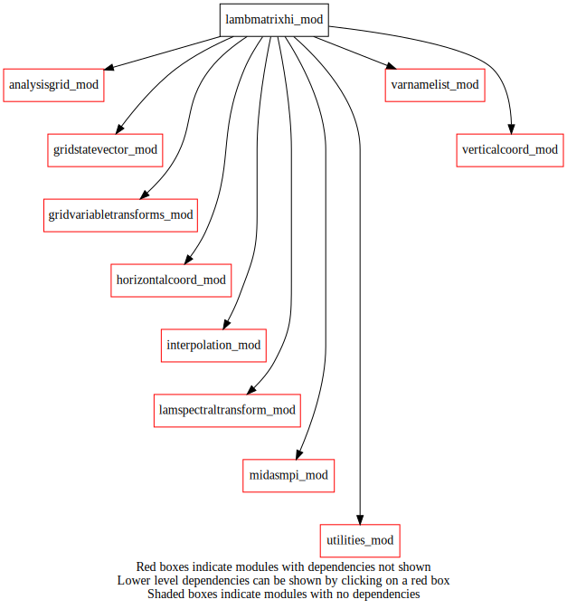
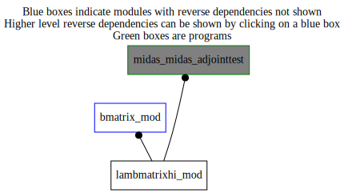

Dependency Diagrams:
 Direct Dependency Diagram¶
 Reverse Dependency Diagram¶
Description
MODULE lamBMatrixHI_mod (prefix=’lbhi’ category=’2. B and R matrices’)
- Purpose
Performs transformation from control vector to analysis increment using the homogeneous and isotropic background error covariance matrix.
Quick access
- Routines
lbhi_bsqrt(),lbhi_bsqrtadj(),lbhi_bsqrtxi(),lbhi_cain(),lbhi_cainadj(),lbhi_cv2gd(),lbhi_cv2gdadj(),lbhi_expandtompiglobal(),lbhi_expandtompiglobal_r4(),lbhi_finalize(),lbhi_getcontrolvariableinfo(),lbhi_gethorizgridinfo(),lbhi_readbsqrt(),lbhi_readgridpointstddev(),lbhi_readstats(),lbhi_reducetompilocal(),lbhi_reducetompilocal_r4(),lbhi_setup(),statevectorinterface()Needed modules
midasmpi_mod: MODULE midasMpi_mod (prefix=’mmpi’ category=’8. Low-level utilities and constants’)
horizontalcoord_mod: MODULE HorizontalCoord_mod (prefix=’hco’ category=’7. Low-level data objects’)
verticalcoord_mod: MODULE verticalcoord (prefix=’vco’ category=’7. Low-level data objects’)
lamspectraltransform_mod: MODULE lamSpectralTransform_mod (prefix=’lst’ category=’4. Data Object transformations’)
gridstatevector_mod: MODULE gridStateVector_mod (prefix=’gsv’ category=’6. High-level data objects’)
analysisgrid_mod: MODULE analysisGrid_mod (prefix=’agd’ category=’7. Low-level data objects’)
utilities_mod: MODULE utilities_mod (prefix=’utl’ category=’8. Low-level utilities and constants’)
gridvariabletransforms_mod: MODULE gridVariableTransforms (prefix=’gvt’ category=’4. Data Object transformations’)
varnamelist_mod: MODULE varNameList (prefix=’vnl’ category=’7. Low-level data objects’)
interpolation_mod: MODULE interpolation_mod (prefix=’int’ category=’4. Data Object transformations’)Types
- type lambmatrixhi_mod/unknown_type¶
- Type fields
% gpstddev (*,*,*) [real ,allocatable]
% gridtype [character ]
% ip1 (*) [integer ,allocatable]
% kdimend [integer ]
% kdimstart [integer ]
% nlev [integer ]
% nomvar (2) [character ]
Variables
Subroutines and functions
- subroutine lambmatrixhi_mod/lbhi_setup(hco_anl_in, hco_core_in, vco_anl_in, cvdim_out)¶
- Arguments
hco_anl_in [struct_hco ,in,pointer]
hco_core_in [struct_hco ,in,pointer]
vco_anl_in [struct_vco ,in,pointer]
cvdim_out [integer ,out]
- Called from
- Call to
agd_setupfromhco(),utl_abort(),vco_setupfromfile(),vco_equal(),lbhi_getcontrolvariableinfo(),lbhi_gethorizgridinfo(),mmpi_setup_lonbands(),mmpi_setup_latbands(),lst_setup(),lbhi_readstats()
- subroutine lambmatrixhi_mod/lbhi_getcontrolvariableinfo(iu_bstats)¶
- Arguments
iu_bstats [integer ,in] :: IN
- Called from
- Call to
- subroutine lambmatrixhi_mod/lbhi_gethorizgridinfo()¶
- Called from
- Call to
- subroutine lambmatrixhi_mod/lbhi_readstats(iu_bstats)¶
- Arguments
iu_bstats [integer ,in]
- Called from
- Call to
- subroutine lambmatrixhi_mod/lbhi_readbsqrt(iu_bstats)¶
- Arguments
iu_bstats [integer ,in] :: IN
- Called from
- Call to
- subroutine lambmatrixhi_mod/lbhi_readgridpointstddev(iu_bstats)¶
- Arguments
iu_bstats [integer ,in] :: IN
- Called from
- Call to
- subroutine lambmatrixhi_mod/lbhi_bsqrt(controlvector_in, statevector[, statevectorref_opt])¶
- Arguments
controlvector_in (cvdim) [real ,in]
statevector [struct_gsv ,inout]
- Options
statevectorref_opt [struct_gsv ,in,]
- Called from
- Call to
lbhi_cain(),lbhi_cv2gd(),statevectorinterface(),gsv_varexist()
- subroutine lambmatrixhi_mod/lbhi_bsqrtadj(statevector, controlvector_out[, statevectorref_opt])¶
- Arguments
statevector [struct_gsv ,inout]
controlvector_out (cvdim) [real ,out]
- Options
statevectorref_opt [struct_gsv ,in,]
- Called from
- Call to
gsv_varexist(),statevectorinterface(),lbhi_cv2gdadj(),lbhi_cainadj()
- subroutine lambmatrixhi_mod/lbhi_cv2gd(hicontrolvector_in, gd_out)¶
- Arguments
hicontrolvector_in (lst_bhi%nla,lst_bhi%nphase,nksdim) [real ,inout] :: IN
gd_out (mylonend-(mylonbeg)+1,mylatend-(mylatbeg)+1,nksdim) [real ,out]
- Called from
- Call to
lbhi_bsqrtxi(),lst_vartransform(),utl_abort(),lst_laplacian(),agd_psichitouv()
- subroutine lambmatrixhi_mod/lbhi_cv2gdadj(hicontrolvector_out, gd_in)¶
- Arguments
hicontrolvector_out (lst_bhi%nla,lst_bhi%nphase,nksdim) [real ,out] :: OUT
gd_in (mylonend-(mylonbeg)+1,mylatend-(mylatbeg)+1,nksdim) [real ,inout]
- Called from
- Call to
utl_abort(),agd_psichitouvadj(),lst_laplacian(),lst_vartransform(),lbhi_bsqrtxi()
- subroutine lambmatrixhi_mod/lbhi_bsqrtxi(hicontrolvector_in)¶
- Arguments
hicontrolvector_in (lst_bhi%nla,lst_bhi%nphase,nksdim) [real ,inout]
- Called from
- subroutine lambmatrixhi_mod/lbhi_cain(controlvector_in, hicontrolvector_out)¶
- Arguments
controlvector_in (cvdim) [real ,in]
hicontrolvector_out (lst_bhi%nla,lst_bhi%nphase,nksdim) [real ,out]
- Called from
- subroutine lambmatrixhi_mod/lbhi_cainadj(controlvector_out, hicontrolvector_in)¶
- Arguments
controlvector_out (cvdim) [real ,out]
hicontrolvector_in (lst_bhi%nla,lst_bhi%nphase,nksdim) [real ,in]
- Called from
- subroutine lambmatrixhi_mod/statevectorinterface(statevector, gd, direction)¶
- Arguments
statevector [struct_gsv ,inout]
gd (mylonend-(mylonbeg)+1,mylatend-(mylatbeg)+1,nksdim) [real ,inout]
direction [character ,in]
- Called from
- Call to
utl_abort(),gsv_varexist(),gsv_getdatakind(),gsv_getnumlev(),vnl_varlevelfromvarname()
- subroutine lambmatrixhi_mod/lbhi_reducetompilocal(cv_mpilocal, cv_mpiglobal)¶
- Arguments
cv_mpilocal (cvdim) [real ,out]
cv_mpiglobal (*) [real ,in]
- Called from
- Call to
- subroutine lambmatrixhi_mod/lbhi_reducetompilocal_r4(cv_mpilocal, cv_mpiglobal)¶
- Arguments
cv_mpilocal (cvdim) [real ,out]
cv_mpiglobal (*) [real ,in]
- Called from
- Call to
- subroutine lambmatrixhi_mod/lbhi_expandtompiglobal(cv_mpilocal, cv_mpiglobal)¶
- Arguments
cv_mpilocal (cvdim) [real ,in]
cv_mpiglobal (*) [real ,out]
- Called from
- Call to
- subroutine lambmatrixhi_mod/lbhi_expandtompiglobal_r4(cv_mpilocal, cv_mpiglobal)¶
- Arguments
cv_mpilocal (cvdim) [real ,in]
cv_mpiglobal (*) [real ,out]
- Called from
- Call to
- subroutine lambmatrixhi_mod/lbhi_finalize()¶
- Called from
{kind=link}
{kind=link}